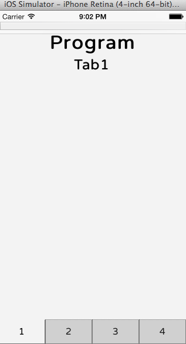
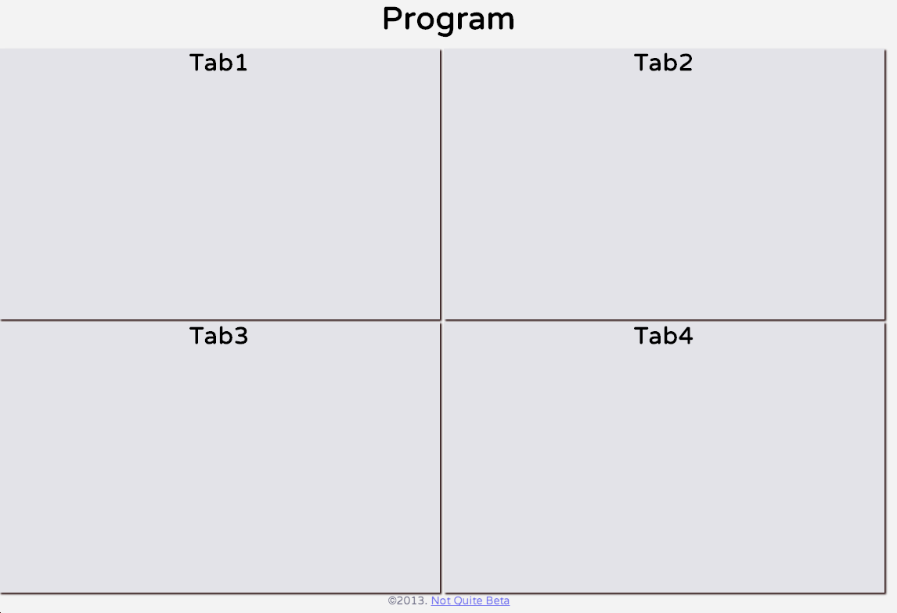

With some momentum from building something that sort of worked in Meteor and Node, I’ve worked on a number of project that also sort of worked. By sort of, I mean that it has basic functionality but there are small aspects that don’t quite work. For example, I wrote a Meteor.js app last weekend but there are still some peoblems with the publish/subscribe aspects that don’t seem to send the correct collections to the client. When I get that running, I’d like to write up a post about it.
Tonight, I wanted to put together a template that would be a starting point for mobile interfaces. I’ve built a framework (although not framework in the programming sense) that should allow someone to easily drop in 4 panels to display. Navigation is based on tabs at the bottom.

Viewed from the desktop, all four panels are laid out and the navigation tabs are hidden.

In the mobile view, clicking on each tab reviews the panel associated with that tab while hiding the rest. It also launches some function associated with loading the panel, which can be customized. For functionality, I used JQuery. There are cookie functions that are not used. What needs to be implemented is a Fastclick mechanism (this removes the approvimately 300ms delay between pressing a button on a mobile device and running its funciton). I’ve tried to use JQuery Fastbutton but I don’t think it’s working (or I need more coffee, not sure).
Overall, this should lower the activation barrier to making an web app by allowing someone to drop in code for each panel. Here is the HTML showing the panels and the nav section. All panels just get plunked between the article tags.
<header><h1>Program</h1></header>
<section id="panels">
<article id="tab1" class="selected">
<header><h2>Tab1</h2></header>
</article>
<article id="tab2" class="notSelected hideMobile">
<header><h2>Tab2</h2></header>
</article>
<article id="tab3" class="notSelected hideMobile">
<header><h2>Tab3</h2></header>
</article>
<article id="tab4" class="notSelected hideMobile">
<header><h2>Tab4</h2></header>
</article>
</section>
<nav id="bottomNav"> <!-- hide on desktop -->
<ul class="nav">
<li class="navtab selected" data-tab="navtab1">1</li>
<li class="navtab notSelected" data-tab="navtab2">2</li>
<li class="navtab notSelected" data-tab="navtab3">3</li>
<li class="navtab notSelected" data-tab="navtab4">4</li>
</ul>
</nav>
The source is available on github.